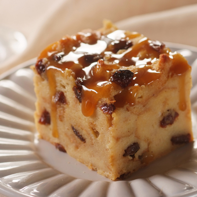

Welcome
Welcome to my personal recipe website.
I created this website to document the recipes I make, the cooking skills I develop, and the lessons I learn along the way.
Featured Recipe
Homemade Pancakes

These homade pancakes are one of the first breakfast recipes I am learning to make from scratch.
The goal is to create pancakes that are soft, fluffy, and evenly cooked.
Recipe Summary
- Preparation time:10 minutes
- Cooking time: 15 minutes
- Difficulty Easy
- Servings 4
Ingredients
- 1 cup all-purpose flour
- 2 tablespoons sugar
- 2 teaspoons baking powder
- 1 cup milk
- 1 large egg
- 2 tablespoons melted butter
- 1 teaspoon vanilla extract
Instructions
- Gather and measure all of the ingredients.
- Combine the flour, sugar, and baking powder in a large mixing bowl.
- Add the milk, egg, and melted butter. Stir until the ingredients are combined.
- Heat a lightly greased pan over medium heat.
- Pour a small amount of batter into the pan.
- Cook until bubbles form on the surface, then flip the pancake.
- Cook the second side until it is golden brown.
My Cooking Journey
My current goal is to become more confident in the kitchen by practicing basic recipes and learning from each attempt.
I will use this website to record what went well, what went wrong, and what I want to improve next time.